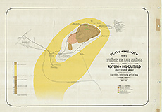
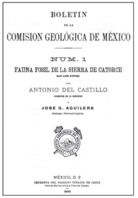

Referencias
Antonio del Castillo
1820 - 1895
Antonio del Castillo fue un ingeniero en minas considerado el primer paleontólogo mexicano pues recolectó y describió fósiles de mamíferos del Valle de México, con los que hizo el primer catálogo oficial de estos vertebrados en el país.
Nació en Michoacán en 1920 y muy joven se mudó a la ciudad de México. Ingresó al Colegio de Minería y después de graduarse, fue director y profesor por muchos años de mineralogía, geología y paleontología en la misma institución.
Consideraba que la enseñanza de estas disciplinas debía sustentarse en una práctica sistemática de exploración, recopilación de muestras, análisis de laboratorio y formación de colecciones; así que acostumbraba llevar frecuentemente a sus alumnos en excursiones geológicas a diferentes partes de la República para hacer colectas y registros.
Fue un hombre muy hábil que supo establecer relaciones con los políticos de ese momento así como geólogos de otros países, para impulsar la investigación geológica. De esta manera participó en la fundación de la Comisión Geológica de México, destinada a elaborar cartas geológico-mineras, un catálogo descriptivo de especies minerales de México y otro de fósiles.
También contribuyó a la creación de la Escuela Práctica de Minas de Pachucha y del Instituto de Geología Nacional (hoy Instituto de Geología de la UNAM). Fue socio fundador de la Sociedad Mexicana de Historia Natural.
Mis favoritos
Mis lugares
- 
- Plano geológico del Peñon de los Baños. 1887. Litografía
- Fuente: Mapoteca Manuel Orozco y Berra
Mis ideas
- 
- Portada del primer número del Boletín del Instituto Geológico de México. Apareció, en 1895, con el nombre de Boletín de la Comisión Geológica de México